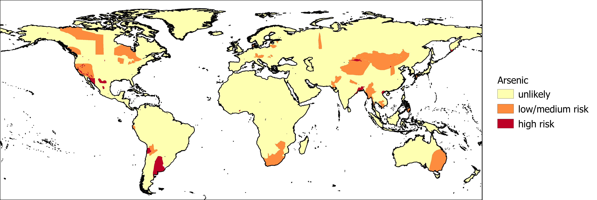

Elevated arsenic concentrations in groundwater are a potential health hazard if left untreated. The International Groundwater Resources Assessment Centre (IGRAC) gathers and provides information on the likelihood of excessive arsenic concentrations in groundwater.

The likelihood of arsenic presence in groundwater.
Reference:
Brunt, R., Vasak, L., & Griffioen, J. (2004). Arsenic in groundwater: Probability of occurrence of excessive concentration on global scale. IGRAC, Report nr SP-2004-1.